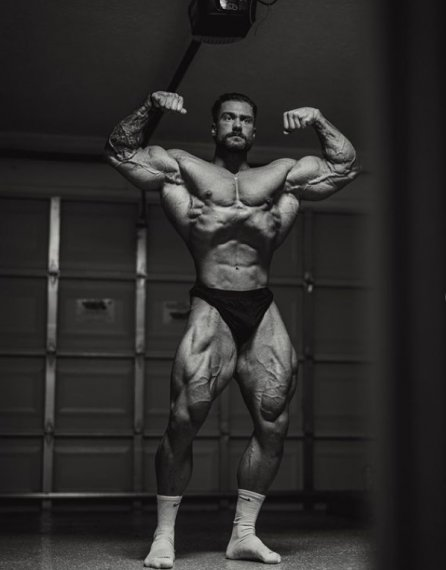

Это моя первая HTML страница
Служба в КГБ СССР (1975—1991)
В 1975 году окончил юридический факультет ЛГУ, был направлен по распределению на работу в Комитет государственной безопасности. Тогда же прошёл курсы подготовки оперативного состава на Охте («401-я школа») и был аттестован младшим офицером (старший лейтенант юстиции) в системе территориальных органов КГБ СССР
Какие фильмы мне нравятся
- Приключения
- Исторические
Какая музыка мне нравится
- Рок
- Хип-Хоп
- Оля бузова
Как связаться со мной?
